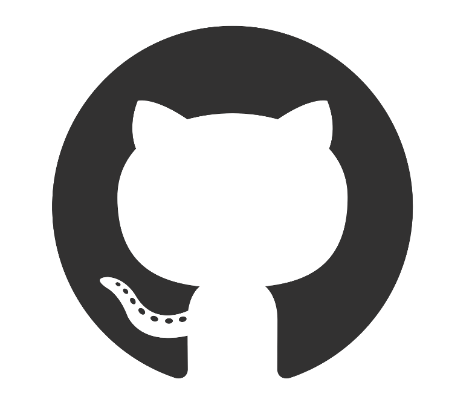
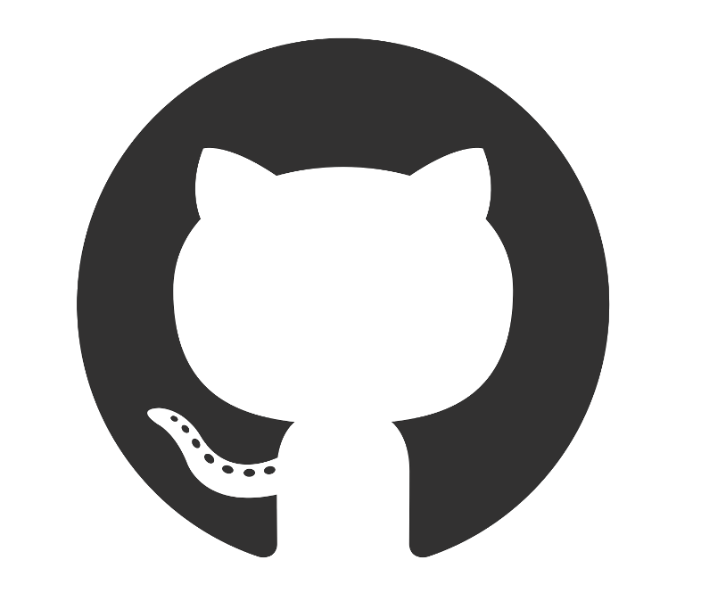
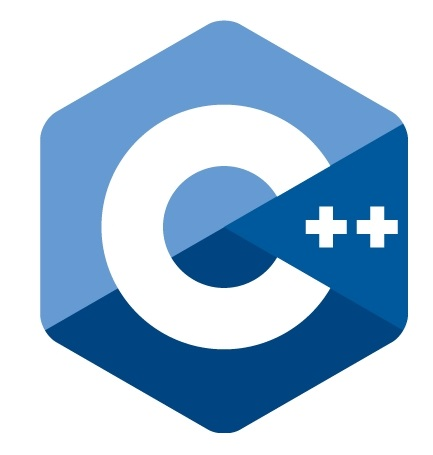
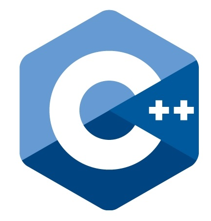

. . . . . . . . . . | Algunos hitos laborales y académicos ..... escríbeme si quieres saber más |
inggm1981@gmail.com|
Actualidad:
Actualmente soy IT Lead pero en mi tiempo libre me desempeño como Full Stack Web Developer trabajando con tecnologías como: HTML, CSS, Ruby on Rails, Javascript y bases de datos. ---- Te recomiendo que visites mi repositorio y veas mis proyectos y mi perfil en GitHubLinkedin ----
Pasado:
A lo largo de mi carrera profesional he conformado puestos laborales en donde apliqué y aprendí conceptos nuevos. Tengo experiencia participando en proyectos de análisis, diseño, desarrollo, testing, implementación y soporte post producción. Tengo experiencia conformando grupos de trabajos multidisciplinarios. He ocupado puestos de IT Manager/ IT Lead por mas de 13 años donde adquirí conocimientos sobre: administración de infraestructuras (servidores -físicos y virtuales-, PC, LAN, WAN, VPN), administración de bases de datos, networking, seguridad de la información, BI, entre otras cosas.
Procesos:
Como consultor he adquirido vasta experiencia en procesos de negocios como: compras, ventas, exportaciones, logistica, cadena de abastecimiento, inventarios (activo fijo, bienes de cambio), producción industrial, gestión de bancos, cobranzas, pagos, tesorería, presupuestos, gestión de RRHH, costos contables, etc.


 

 
